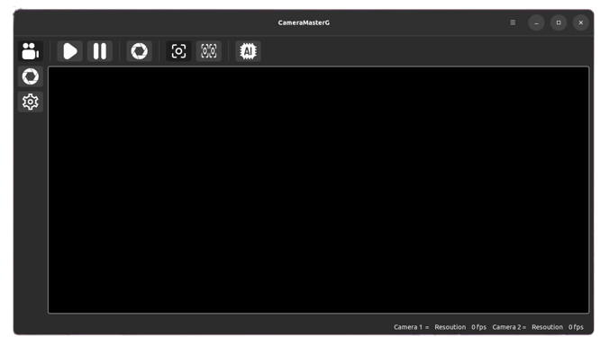
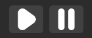
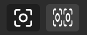

Live Page
Description

Live 페이지는 실시간 영상 모드, 캡처 모드, 설정 변경 기능을 제공합니다.
왼쪽 메뉴 에는 페이지 설정을 위한 버튼들이 배치됩니다.
Live 버튼을 선택하면 실시간 영상 모드로 전환됩니다.
Capture 버튼을 선택하면 캡처 모드로 전환됩니다.
Setting 버튼을 선택하면 설정 변경이 가능합니다.
상단 버튼 그룹에서는 Live 모드에서 사용할 수 있는 다양한 컨트롤 버튼을 제공합니다.
하단 상태 표시줄(Status Bar) 에서는 현재 설정된 해상도와 프레임별 FPS(초당 프레임 수) 정보를 확인할 수 있습니다.
Live Play (실시간 영상 제어)

Live Play 기능을 통해 실시간 영상 재생 및 정지가 가능합니다.
Play 버튼을 누르면 설정된 값으로 실시간 영상이 재생됩니다.
Stop 버튼을 누르면 실시간 영상이 정지됩니다.
Capture (이미지 캡처 기능)
Capture 기능을 통해 특정 프레임을 이미지로 저장할 수 있습니다.
Capture 버튼을 클릭하면 현재 프레임이 캡처됩니다.
캡처 후 자동으로 Capture 페이지로 이동합니다.
Single & Dual Mode 전환

Single & Dual Mode 기능을 활용하여 영상 모드를 변경할 수 있습니다.
1채널(싱글) 카메라 모드로 설정하면 단일 카메라의 영상을 출력합니다.
듀얼 카메라 모드로 설정하면 두 개의 카메라 영상을 동시에 출력합니다.
사용자 설정에 따라 원하는 모드로 전환할 수 있습니다.
AI Detection 기능

AI Detection 기능을 활성화하면 영상 내 객체를 자동으로 감지할 수 있습니다.
제공된 데모 AI 모델을 활용하여 실시간 객체 탐지를 수행합니다.
AI Detection이 활성화되면 실시간으로 감지된 결과가 화면에 표시됩니다.